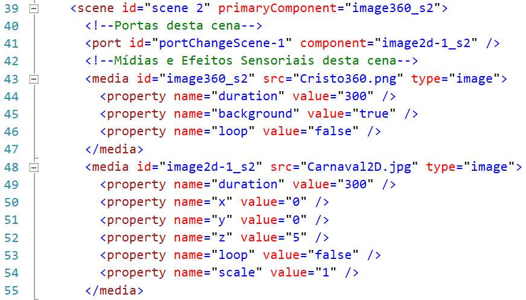

Tutorial - Relacionamentos e Portas em um projeto MultiSel
MultiSel é baseado em outras linguagens como NCL e SMIL, portanto importando algumas tecnicas, destas tecnicas para o AMUSE VR citamos:
- Relacionamento - responsável por realizar interações ou ações entre mídias ou cenas.
- Portas - responsável por disponibilizar uma porta/interface de interação ou entrada entre objetos ou cena
A imagem a baixo mostra um exemplo de uma cena com este conteúdo.

Relacionamentos
Como dito anteriormente, os relacionamentos tem como objetivo realizar ações entre cenas ou mídias.
No MultiSel para o AMUSE VR, ele através da tag relation e deve-se conter as tags filhas primary e secondary
Relacionamentos internos de cada cena
A imagem a baixo mostra nas linhas 57 a 69, relacionamentos internos de uma cena.

Em cada cena, deve-se conter relacionamentos internamente, que realizem ações como exibir e ocultar mídias e ES:
- Exibir uma mídia ou ES - usando o atributo type="starts", como visto na linha de 61.
- Exibir uma mídia ou ES - usando o atributo type="finishes", como visto na linha de 65.
Neste tipo de relacionamento as tags filhas apresentam a funções de:
- primary - apontar a origem da mídia ou ES, como visto na linha de 62.
- secondary - determinar o alvo da mídia ou ES a receber a ação, como visto na linha de 63.
Relacionamentos externos às cenas
A imagem a baixo mostra nas linhas 71 a 78, relacionamentos externos às cenas.

Nos projetos em MultiSel par o AMUSE VR, comandos interativos como cliques em imagens, textos e botões, com objetivo de transitar entre cenas, é necessário que o relacionamento que fique localizado fora das cenas, a fim de ter enxergar e ter acesso todas as cenas.
Para projetos AMUSE VR, usa-se para as tags relation os atributos:
- type="onSelectionStarts" - que determina que iniciará uma cena escolhida ao selecionar uma mídia escolhida, como visto nas linhas de 71 e 75.
- keyCode="trigger" - determinar que a ação de início será executada por um botão de gatilho, como visto nas linhas de 71 e 75.
Neste tipo de relacionamento as tags filhas apresentam a funções de:
- primary com o atributo component - apontar a cena de origem da ação, como visto nas linhas de 72 e 76.
- primary com o atributo interface - indica a porta de acesso da mídia da cena, como visto nas linhas de 72 e 76.
- secondary - apontar a cena a ser iniciada após a ação, como visto nas linhas de 73 e 77.
Portas
A imagem a baixo mostra na linha 41, um exemplo porta.
As portas no AMUSE VR têm como objetivo, prover acesso a ações que levem de uma cena a outra.
No AMUSE VR, todo relacionamento externo à cena, necessita de uma porta para prover acesso ao conteúdo da cena.
Todas as portas devem ser criadas internamente as cenas que forneçam acesso a uma de suas mídias.
Para criar uma porta é necessário criar a tag port, com um atributo id único e o atributo component, que representa a mídia alvo da porta.
Atenção
Ao criar um comando interativo de clique em alguma mídia, é necessário, criar uma porta na cena que contenha a mídia originária a mesma mídia que terá a ação responsiva, além disso, é necessário criar um relacionamento externo às cenas, como visto anteriormente.